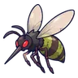
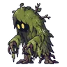
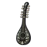
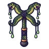

ป่าชายเลนน้ำขึ้น
ดูบนแผนที่และวิธีไป วางแผนฟาร์ม
ชั้นล่างในแดนใต้สีแดง · Lv 48–62
ชั้นล่าง / ดันเจี้ยน
เดินต่อไป
มอนในแมพ (7)
| มอน | Lv | ธาตุ | โซน |
|---|---|---|---|
 ยุงยักษ์ | 48–60 | พิษ | ต้นโกงกางยักษ์ |
| 48–56 | พิษ | ||
 ผีมอสห้อย | 50–62 | ดิน | ต้นโกงกางยักษ์ |
| 50–62 | พิษ | ||
| 50–62 | น้ำ | ต้นโกงกางยักษ์ | |
| 50–62 | น้ำ | ||
| 68–68 | พิษ |
อุปกรณ์ที่ดรอปในแมพนี้
| ของ | โอกาสสูงสุด |
|---|---|
| 0.5% | |
| 0.5% | |
| 0.25% | |
 เครื่องดนตรีไม้ดำฝังมุก | 0.25% |
 ไม้เชิดหุ่นงูไขว้ | 0.25% |
| 0.25% | |
| 0.25% | |
| 0.25% | |
| 0.25% | |
| 0.12% | |
| 0.12% | |
| 0.12% | |
| 0.12% | |
| 0.12% | |
| 0.12% |